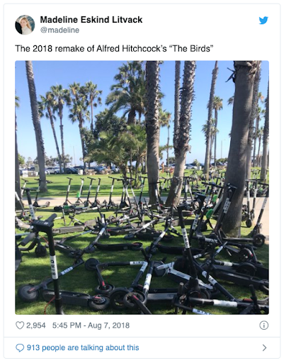
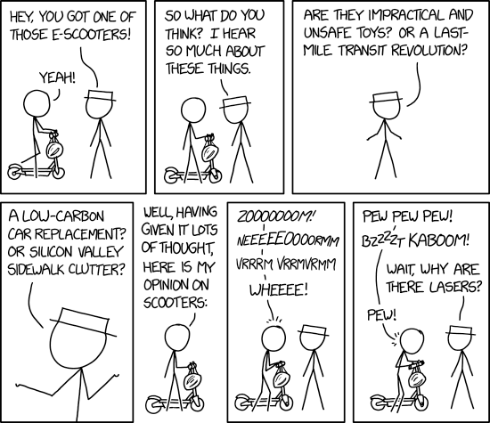
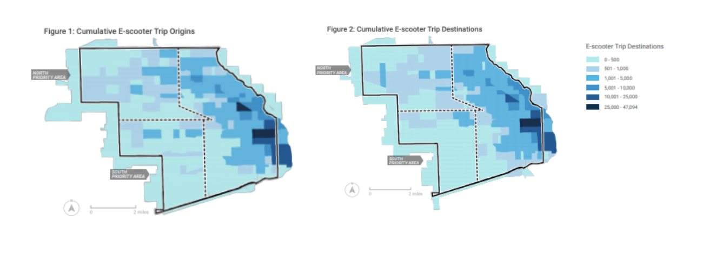
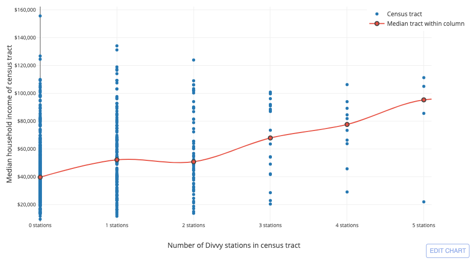
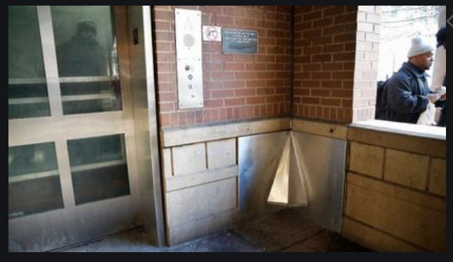

Chicago
E-Scooters in Chicago: A Cautionary Tale
Beatrice Chao
Lysander Wong
02/06/2020
“Disruption” is one of the tech world’s most beloved buzzwords.
Innovators are constantly seeking to “disrupt” industries, and their efforts are often welcomed eagerly and unquestioningly. This hunger for disruption seems to be driven by the belief that technology alone holds the key to societal progress. However, technology carries its own set of problems, and when left unchecked and unexamined, can encode into society biases favoring some interests over others.
No phenomenon highlights these tensions quite as clearly as the e-scooter phenomenon. Cities across the US have been dealing with companies ‘disrupting’ transportation by implementing their scooters systems overnight, without consulting authorities. Some hail this as an innovative solution to the inequalities and adverse environmental impacts of transportation. Yet others point out the new problems these scooters introduce in safety and barriers to accessibility. One thing is for sure - this technology will affect our society in both intended and unintended ways, and giving it free reign in the name of “technological progress” without thoughtful discussion is unwise at best, catastrophic at worst.
This paper seeks to understand the values and attitudes that have shaped the implementation of e-scooter technology in Chicago, and their subsequent impact on society. In the process, we will also examine the interplay of public policy and technological advancement, and the politics embedded in society’s interaction with technology.
Private Choices, Public Implications: The dangers of “technology first”
As technology becomes more pervasive, companies amass greater power to influence society, and to do so possibly without oversight. In her book “Race after Technology”, Benjamin points out that private industry choices are increasingly becoming public policy decisions (Benjamin, 2020). E-scooters are a prime example of this phenomenon - many cities have been frustrated by the “arrive first, ask later” approach of e-scooter companies, where authorities are forced to write legislation in post banning or regulating the use of these scooters (Irfan, 2018). The roll-out strategy of these e-scooters were private company decisions, but the consequences were borne by the public.
The private sector often defends its choices and roll-out strategy as rooted in “design-thinking” and technological best practices. However, designers are humans with biases too, and may inevitably overlook the interests of others not like them. Allowing technology to influence public policy without caution may allow biases in private technologies to become unwittingly encoded into policy. Many e-scooters introduced in cities without warning were found to be obstructing public pathways, presenting danger to those who are less mobile (Fig 1). Scooters that operate silently are also dangerous to the visual and hearing-impaired when used on pedestrian walkways. The dangers of idealizing the value of “design thinking expertise” is in erasing the agency and concerns of those who aren’t the designers, in this case, the disabled community (Benjamin, 2020).

Fig 1- Scooters blocking pathways in Santa Monica after their
unceremonious introduction (Irfan, 2018)
Yet, these e-scooter companies seemed unconcerned about the dangers of prioritizing technological concerns over public ones in decision-making. This may stem from the ideology of “technological determinism” that some companies (and some social commentators) subscribe to, specifically that society should respond to the advance of technology, rather than technology serving society. The head of Bird UK said, “I think when you’re disrupting, for better or worse, there’s going to be that clash between the way things happened and the way they will happen in the future.” (Laker, 2020). Transparent in this quote is the assertion that technology’s march of progress is something society should accept as inevitable, and that the voices of other stakeholders are less important than those of the technology designers .
Private Solutions to Public Problems: A mismatch in priorities
The relation between private decisions and public policy extends deeper - sometimes, private technology is taken to be a viable replacement for public policy. Many people see e-scooters as an innovative solution to fill current gaps in public transportation. As one New York City commentator wrote, “Lawmakers don’t have to spend a dime of taxpayer money to get access to e-scooters and to start improving local transportation. They just need to get out of the way.” (Westin, 2020). Indeed, the view that the private sector can offer public solutions is an attitude that private companies actively attempt to support. E-scooter companies are eager to claim they have public interests and societal benefit at heart - even in the few days after Chicago’s e-scooter pilot test ended, scooters companies like Lime have rushed to publish statistics showing their scooters increased access to the CTA (Alani, 2020). Bird and Lime have also both introduced programs discounting ridership for low-income citizens.
However, the delusion that technologies are purely benevolent in their service of public policy limits our ability to protect ourselves when private and public values are misaligned. In the end, these companies are private entities. Though they may serve socially beneficial functions, their primary motivation will always tend towards what makes the most money, which may mean prioritising what will be attractive to the average user over what is best for collective goals such as equitable access to transportation, environmental sustainability, and safety of marginalized communities (Fig 2).

We can see the priorities of these companies revealed in their failure to comply with regulations regarding the distribution of scooters to underserved communities. None of the 10 e-scooter companies in the Chicago trial consistently met the requirement to redistribute scooters to priority areas each morning (City of Chicago, 2020), perhaps because redistribution requires the hiring of labour, increasing costs, or because demand for scooters is higher in wealthier neighborhoods, increasing revenue. Despite a verbal promise to address “transport deserts” as a key commitment (Alani, 2020), it is obvious companies will always serve their profits first.
Private Entities with Public Power: Politics and the first-mover advantage
This is not to say that technology should be banished from the realm of public policy. To claim this would be to blatantly ignore the massive improvements in quality of life that has accompanied technology’s rise. E-scooters do have the potential to fill some gaps in solving inequality in access to transport and offering eco-friendlier ways to travel.
In order to fully harness the benefits of technology for the public good of its users, rather than just the private benefits of its providers, Noble proposes a two-pronged approach: more dialogue across multiple stakeholders, and more government regulation (Noble, 2018). This is indeed what Chicago has attempted with its e-scooter pilot, by consulting transportation groups, disability advocates, local chambers of commerce and community organizations. Based on this, the city was able to impose strict guidelines safeguarding the interests of disabled persons, including operational bells on all scooters and the requirement that companies develop accessibility plans (City of Chicago, 2020). This is an example of how dialogue and collaboration can promote public interests.
However, to ensure the effectiveness of such collaboration, the dialogue has to occur before a technology is introduced. Once a technology becomes part of society, it conveys political power to the providers, at the expense of the users. The city of Chicago may have fined companies who failed to comply with regulations, but fines may not be as effective in the future if the city starts to become reliant on one or two major e-scooter providers. Winner highlights that “by far the greatest latitude of choice [in determining how power is structured] exists the very first time a [technology] is introduced.” (Winner, 2020). After e-scooters are introduced, a cities’ power to regulate these scooters becomes greatly limited (Irfan, 2018). This provides a source of hope for Chicago, who has taken a proactive approach to the introduction of e-scooters right from the start and thus may have more power to influence where e-scooters are distributed, as compared to if there was no trial.
Private Technology within Public Spaces: The limits of change
So far, our discussion has discussed the ways in which technology has the power to shape and change society, and if left unchecked, to shape it for the worse. It may suggest that as long as it is properly regulated and checked, technology can be harnessed as a harbinger of real change. However, the e-scooter trial in Chicago also provides insight on the inherent limitations of technology to change unequal systems already embedded in society, even with the best intentions.
Chicago authorities made an effort to ensure equal access to e-scooters by distributing them each morning to priority areas (mostly low-income neighborhoods). However, by evening, scooters were found to be more concentrated in the richer communities of West Loop and Milwaukee Avenue (City of Chicago, 2020). (Fig 3) Ridership of these scooters was also geographically concentrated in affluent communities where there was already a high density of transport options. Rather than re-distributing power from a privileged group to a marginalized one, technology may sometimes merely reflect the power distribution already in place.

This is not new - docked Chicago Divvy bikes have been around for a long time, and studies have shown that they have not quite closed the equity gaps in transportation as initially hoped, even when tempered by government regulation. Divvy bikes are utilised less by minorities, even after the introduction of the “Divvy for Everyone” program discounting access to Divvy bikes for low-income users (Anbinder, 2020). Studies found that minorities report knowing less information about access to discount programs, safe streets, protective gear, and reassurance about liability and hidden fees (Alani, 2020). Access to technology has been unequally distributed among income groups for decades, and this inequality is only compounded with the introduction of new technologies. Divvy docking stations are also disproportionately located in richer communities (Fig 4) Affluent communities are more likely to have access to technologies, and this technology in turn increases their affluence… the end result is a vicious cycle of rich communities becoming richer, and poor communities staying poor.

Conclusion
At the conclusion of the trial, the City of Chicago presented its recommendation for the implementation of e-scooters in the city - a second trial. This caution perhaps represents the best response we can have towards the impact of new technology on society - there is reason to temper our excitement about technology’s virtues, and tempering excitement will help make sure the technology doesn’t ignore the interests of minorities and the public in favor of private actors or an elite few. Considering the concerns we have brought up, it’s shocking how blasé engineers and even some social commentators are towards opposition to e-scooters, and how righteously indignant they are about government regulation over scooters in cities, especially where they were placed without permission. The decision-makers on how technology is implemented (and therefore how it shapes society) cannot only be private technology providers - we need governments and social groups to join the conversation too. If not, we risk encoding biases which reinforce discriminiation not only in our technologies, but in our very way of life.
Technology obviously provides opportunities for real advancements in society. However, we have to be cautious of giving it too much power, lest we allow it to shape society for the worse in ways we don’t intend. Yet at the same time, we must know that there is a limit to the extent technology can shape society as well, as technology too is constrained by existing social conditions, hierarchies and institutions of power. All that being said, I remain cautiously optimistic about e-scooters, as long as we continue to remain in dialogue with each other and ensure we all have a part to play in determining where we travel to next.
Works Cited
-
Anbinder, J. (2020). Chicago Is Making Bike Share Ultra-cheap for Poor People. Will It Matter?. Retrieved 5 February 2020, from https://tcf.org/content/commentary/chicago-is-making-bike-share-ultra-cheap-for-poor-people-will-it-matter/?session=1&session=1
-
Benjamin, R. (2019). Race After Technology.
-
City of Chicago. (2020). E-Scooter Pilot Evaluation. Chicago: City of Chicago. Retrieved from https://www.chicago.gov/content/dam/city/depts/cdot/Misc/EScooters/Scooter_Evaluation_1.29.20.pdf
-
Irfan, U. (2018). Electric scooters’ sudden invasion of American cities, explained. Retrieved 5 February 2020, from https://www.vox.com/2018/8/27/17676670/electric-scooter-rental-bird-lime-skip-spin-cities
-
Laker, L. (2020). Welcome, watch or ban: how should cities deal with electric scooters?. Retrieved 5 February 2020, from https://www.theguardian.com/cities/2019/jun/18/welcome-watch-or-ban-how-should-cities-deal-with-electric-scooters
-
Noble, S. (2018). Algorithms of oppression. NYU Press.
-
Schneider, B. (2020). Bike Sharing Still Has a Stubborn Diversity Gap. Retrieved 5 February 2020, from https://www.citylab.com/equity/2017/07/what-keeps-bike-share-white/533412/
-
Westin, J. (2020). Opinion: The Equity Case for E-Bikes and E-Scooters in New York City. Retrieved 5 February 2020, from https://citylimits.org/2019/05/14/opinion-the-equity-case-for-e-bikes-e-scooters/
-
Winner, L. (2020). Do Artifacts have Politics: The Whale and the Reactor. [S.l.]: University of Chicago Press
-
Alani, H. (2020). Chicago Scooters Were Used To Fill Gaps In Public Transportation, With Many Ending Up At CTA Stations, Lime Says. Retrieved 5 February 2020, from https://blockclubchicago.org/2020/01/08/lime-scooter-riders-no-1-destination-was-the-damen-blue-line-stop-data-shows/
-
E Scooters. (2019). Retrieved 5 February 2020, from https://xkcd.com/2188/
Chicago
Aiming to Create Neutral Technology is a Pipe Dream
Ronni Hayden
Lysander Wong
02/05/2020
About a year ago a picture surfaced on Reddit with the caption “Pee Shields Enabled on CTA platforms” (Picture in Appendix A). Soon after, this story was picked up by the Chicago Tribune where more details about the metal shields were brought to light (What are Those Metal Triangle Things at CTA Stops? Yes They’re Urine Guards, 2018). It turns out that the shields were installed in seven stations, on the Orange Line at Ashland, Halsted, and Roosevelt and at the Red Line at Addison, 25th, Howard and Harold Washington Library. The urine guards were installed as part of a pilot program in 2012 and, according to spokeswoman Irene Ferradaz, were “designed as a deterrent to public urination, and to help limit the impacts and facilitate easier cleanup.” It is unclear why those specific stations were chosen or if the shields have had the desired effect. In light of the photo surfacing, many people began to comment on the technology; one person pointing out that a person could “just pee right here,” pointing a few inches away from the structure and others questioning why the CTA does not provide public restrooms for riders at stops along the lines. It is with the creation of this type of contraption in mind that I will center my conceptual framework surrounding technology and its sociopolitical implications.
When I first stumbled upon this article in the Chicago Tribune while researching another aspect of the CTA for this project, I immediately had a visceral reaction. I began my time at Northwestern as a Manufacturing and Design Engineering student before being completely disenchanted with the “human-centered” design curriculum in McCormick and transferring to the Learning Sciences major. Before going off to college, my dad sat me down in a moment of unique earnestness about the potential implications of my chosen career path. My dad was the former director of my city’s public library and as such worked closely with city officials and city engineers in his 35+ year-long tenure in the position. He told me about an incident that took place in one of his first years as a director when a young boy was hit and killed by a car at the bottom of the hill the library was located on by a speeding car. When he demanded that a stoplight replace the stop sign currently in place in order to better prevent speeding, the city engineers pushed back. They cited that since it wasn’t technically necessary to build a street light according to city codes, it wasn’t a justifiable use of city money. My dad told me this story, and about his eventual success persuading them to have a stoplight put in, to warn me that as an engineer I needed to ensure that I never lost my empathy and compassion for the sake of efficiency or money. Despite no longer studying as an engineer, it is with this focus on compassion and empathy towards humans that I try to approach my studies as a learning scientist and how I aim to view the creation of technologies around me.
When viewing a technology such as one that aims to prevent public urination by causing urine to splash back onto the perpetrator, it is impossible not to consider the political and social implications at play in its design. Although not all technology has such blatant social implications, I believe that no technology is neutral as a result of its creation by and for political humans. The adoption of technology requires the existence of a society that allows for the operation of that technological innovation, technology directly points to which humans are prioritized in society and why, and the definition of a technology’s success is emblematic of what society deems valuable in pursuit of human achievement and growth.
The concept that the adoption of a technology inherently requires the “creation and tenance” of certain societal norms and values comes from Langon Winner’s work Do Artifacts Have Politics? (1980). In this work, Langdon argues that there are two types of political objects. Objects that are political because they were created with the goal of solving a particular political issue, and cases that are “inherently political” because they require the existence of specific types of political relationships. I argue that a device like the urination guard described in this paper lands in the second category.
This type of contraption would not, and could not, exist in a society where human worth was valued over monetary efficiency.
I think it is important to point out that before the 1970s, there were public restrooms in every CTA stop in Chicago. However, fifty years ago the city decided to close these restrooms “due to a lack of funds to maintain the facilities and concerns over security” (Chicago Tribune, Why are There No Bathrooms on the CTA?) These restrooms still exist at most CTA stops today, but are locked for use by the public. Opting to close restrooms and create hostile devices like these guards in order to pay less money on cleaning fees at stops is an indication of the societal norm that the ability to have somewhere to use the restroom is not valued as a human right. These guards are an obvious example of anti-homeless design practices that can only exist in a society where the people funding and creating technology are ignorant of the lived experience of people that don’t have homes or workplaces that they are welcome to enter to use the restroom. I think that it is necessary to question the societal norms and systems at play that allow for and encourage the use of any new technology today. This type of deeper reflection may lead to systems being created that are more just and driven by empathy, urging a deeper level of questioning why people may have no choice but to pee in public areas and choosing to design for a solution to that larger systemic issue, instead of designing for the prevention of people peeing in public areas so as to allow for less hemorrhaging of money towards sanitation services.
It is also true that the design of all technology directly points to which humans are most valued in society. Ruha Benjamin explores this notion in her work Captivating Technology: Race, Carceral Technoscience and Liberatory Imagination in Everyday Life, as she talks about how “technology aids and abets inequities in society….Social norms, policies and institutional frameworks shape a context that makes some technologies appear inevitable and others impossible” (2019). Benjamin continues to talk about the differences between discriminatory design and design for justice where design for justice thinks about the process and power dynamics across axes of oppression. It is not hard to see how these types of guards are a clear example of a discriminatory design. This type of design is emblematic of a society that considers unhoused people as less than. That we must work to prove our worth and that our worth is measured at least partially by being able to afford access to shelter. Clearly the design of this technology is not neutral. It is not the result of a society “moving forward.” But it is a piece of new technology that was discussed, tested, funded and released in order to have its desired effects of making CTA train stop corners a more hostile place to urinate.
If we thought more critically about the ways that the creation of new technologies point to what we value in society, whether that is justice, opportunity, equality, or if it is money, power, or efficiency, we will be much more likely to create technologies that have the possibility to cause larger structural changes towards a better future, rather than immediate Band-Aid solutions that favor certain people with stability, power and privilege over those without.
Finally, when designing new technology it is important to consider what a successful use case for the technology looks like. Looking in detail into who designed a device and what that person or company is trying to accomplish can uncover a lot about the values that are instilled within the device. When viewing “success” in light of the metal guards at CTA stops, questions surrounding the ethics and humanity of the design come to the surface. Is the object successful if it stops anyone from urinating on it? Is it successful if they urinate somewhere else instead? Is success measured by the device succeeding in reflecting the person’s urine back onto them? And if it is the last one, how does this form of dehumanization reflect upon the designer’s own values and views of society? It is clear that success for this device does not include directing a potential user to somewhere else they may be able to find a public restroom. Success is not working to ensure justice for people that may have become systematically oppressed to the point of losing the basic human need to shelter. Success is not working to create a society where access to public restrooms is considered a right, not a waste of money and resources. Values and desires directly influence our choices, the kind of questions we ask or the kind of problems we seek to solve, how we go about answering those questions or solving those problems, and what we define as success. As a society, it is our job to push back again the creation of new tools whose definition of success does not reflect our own definitions of moving towards a successful society.
Appendix A

Works Cited
-
Greene, M. (2018, December 20). What are those metal triangle things at the 'L' station? Yes, they're urine guards. Retrieved from https://www.chicagotribune.com/news/local/breaking/ct-met-cta-urine-shields-20181219-story.html
-
Winner, L. (1980). Do artifacts have politics?. Daedalus, 121-136.
-
ONeil, C. (2017). Weapons of math destruction: how big data increases inequality and threatens democracy. Great Britain: Penguin Books.
-
Benjamin, R. (Ed.). (2019). Captivating technology: Race, carceral technoscience, and liberatory imagination in everyday life. Duke University Press.
-
Chicago Tribune. (2018, August 24). Why are there no bathrooms on the CTA? Retrieved from https://www.chicagotribune.com/news/ct-xpm-2007-05-14-0705140432-story.html
r/chicago - Pee shields enabled on CTA platforms. (n.d.). Retrieved from https://www.reddit.com/r/chicago/comments/a5mmo6/pee_shields_enabled_on_cta_platforms/
Chicago
Inclusive Technology Cannot "Wait"
Henry Lang
Lysander Wong
5/13/2020
Mayor Lightfoot may have a vision for Chicago to be the most accessible city in the country, but the city currently has a tremendous deficit of inclusive designs to assist residents in navigating public spaces. Many individuals who have invisible disabilities struggle to travel safely on foot throughout the city and its surrounding neighborhoods. Perhaps the most pressing issue is the lack of technology to ensure that all pedestrians are able to cross streets without the risk of getting hit by a car or inadvertently causing a motor vehicle accident. Today, pedestrian deaths account for roughly 16% of total traffic deaths in the United States (Wickert, 2018). Mayor Lightfoot’s administration intends to install many more ‘accessible’ (audible) pedestrian signals with the understanding that the technology reflects the city’s values of inclusion and equity. I will conduct a sociopolitical analysis of ‘accessible’ pedestrian signal (APS) technology to argue that it fails to meet the needs of doubly disadvantaged individuals who are living with both vision and hearing challenges. ‘Accessible’ pedestrian signals are designed to improve pedestrian safety but they do not inculcate a culture of equitable everyday navigation in Chicago.
Historically, ‘accessible’ pedestrian signals have served to improve travel experiences for persons with invisible disabilities. As an individual with learning differences who hopes to become a radical teacher in Chicago Public Schools, I am very familiar with The Americans with Disabilities Act (ADA). Federal law requires equal access to public right-of-way for individuals who are living with disabilities. David Kuemmel, a renowned researcher who specializes in transportation policy, is concerned that acoustic challenges at certain streets pose additional challenges for individuals with visual impairments to cross intersections safely and with confidence. Kuemmel specifies that the trend of widening streets to make room for additional turn lanes and greater vehicle traffic consequently generates more background noise (2000). Even with the presence of APSs, the increased commotion makes it difficult for people to judge whether it is safe to cross. Changes in transportation regulations have also contributed to increased intersection dangers, such as Senator Bumpers’ infamous “Right-turn-on-Red” legislation. In terms of engineering ethics, the ‘accessible’ pedestrian signal designers ought to “hold paramount the safety, health, and welfare of the public” (Franssen et al, 2018). Noble urges me to consider who is harmed by technologies that reinforce marginalization through decision-making systems (2018). APSs exist to assist visually-impaired folks in deciding when it is safe to cross, but the technology still favors individuals who do not have hearing difficulties. The design’s impact is exclusive because it creates more challenges for individuals with hearing loss who are unable to rely on APSs. Nobody seems to be challenging the technology’s flaws even though some individuals struggle to discern these audio cues at busy intersections.
According to the Disability Rights Advocates’ website, the tiny percentage of intersections with audible pedestrian signals in Chicago makes it the worst foot traffic environment of any major city in the country. Out of Chicago’s 3,000 light-equipped intersections, only eleven of them have audible pedestrian signals (Kozlov, 2019). A few miles north of the city’s limits, the City of Evanston has vowed to improve major intersections between Ridge Avenue and cross streets like Main, Dempster, and Davis. But according to their website, construction is not scheduled to commence until 2022 despite already receiving $700,000 in funding for the project. If Evanston is going to make a sizable investment in ‘accessible’ pedestrian signals, then the technology should be re-evaluated based on input from members of the Blind and the Deaf community. Chicago is at a similar standstill. The American Council of the Blind of Metropolitan Chicago has proposed legal ramifications for the city’s construction delays. In September 2019, the organization filed a class action lawsuit regarding Chicago’s lack of appropriate signals to help blind and visually-impaired individuals cross streets safely. Although a city spokesperson has stated that officials do not comment on current lawsuits, the Chicago Department of Transportation has purportedly started to make new plans for audible signal implementation (Kozlov). However, Chicago will only be able to install new APSs at fifteen to twenty-five intersections per year (Disability Rights Advocates, 2019), which constitutes a replacement rate of less than one percent annually. The plaintiffs are not seeking financial damages and only want to advocate for a safer and more equitable infrastructure. Still, I wonder how APSs may be redesigned to increase their effectiveness.
I was initially inspired to investigate APS technology after a concerning experience while commuting on foot from Annenberg Hall to my practicum position at Evanston Township High School. At the intersection of Green Bay Road and Asbury Avenue, I pressed one cross button while a pedestrian next to me pressed the button below it. When I was cleared to cross, I could barely isolate my signal’s voice from the opposing voice, which simultaneously commanded the other pedestrian to “wait” via an adjacent speaker. Had I not been privileged with adequate vision, I would not have been able to judge whether it was safe for me to cross Green Bay based on the audible signal alone. Ruha Benjamin states in an interview with Mikah Sargent that making decisions with only one population in mind imbues a power dynamic that prompts us to stop asking questions: “We need to keep our eye on the ways past patterns of human decision-making get encoded...the assumptions are serving as inputs and often reproducing inequities” (2019). APS engineers have prioritized the technology to favor the collective Blind community over the needs of blind individuals who also have hearing and auditory processing challenges, thus reinforcing a cycle of inequity reproduction in the public sector. I cannot stress enough how stressful it can be to attenuate these “accessible” recordings when they overlap, not to mention crossing amid the roar of five o’clock traffic on a busy Monday afternoon. Listening for moving traffic at an intersection is not sufficient for folks who require auditory aides to cross safely, especially with Chicago’s elevated train system rumbling overhead. If city law states that blind persons do not have the right-of-way without an approved cane or a service dog leading them, then APSs must be more reliable.
Since their initial launch, ‘accessible’ pedestrian signals have been updated moderately to produce speech messages based on studies that assess their effectiveness. The most common audio in older models was a “cuckoo” sound for north-south crosswalks and “chirps” for east-west crossings (Bentzen et al, 2004). The Orientation and Mobility Division of the Association for Education and Rehabilitation of the Blind and Visually Impaired has criticized the “cuckoo” technology, citing the possibility for pedestrians to lose their sense of direction on streets that do not run in cardinal directions (Bentzen et al). I noticed while studying abroad last fall that cities like Gothenburg, Sweden utilize APSs with repetitive beeping tones at different intervals to indicate the remaining duration to cross the street. At Northwestern University, I have found that the Sheridan Road APSs are also generally reliable. If I push the button while the crosswalk light is red, the voice-automated APS commands me to “wait!” Although APSs with verbal messages may give messages in non-English languages, terms like “wait” and “walk sign” are not advised to be altered in translations (Bentzen et al). I suppose this restriction could be held due to a lack of research on phoneme effectiveness in conveying the “wait” command in other languages.
The most important function of APSs is to clarify which crosswalk is safe to cross at a given street corner. The best way to convey this message, according to Bentzen’s research, is via pre-recorded sentences like “Walk sign is on to cross Dempster Street” (92.8% effective for blind respondents) versus “Dempster Street walk sign” (only 80.8% effective). The authors conclude that fully-phrased recordings are more likely to be understood correctly by blind pedestrians. However, some designers argue that street names should come first in the audio because users are already primed to hear “walk sign” cues. In other words, blind pedestrians risk their lives by incorrectly assuming that the street they wish to cross is ready. Given these suggestions, the best current practice relies on stating the street, then stating the walk sign status, and finally repeating the street (Scott et al, 2014). I hear this model every day on my walk to school: “Sheridan Road. Walk sign is on to cross: Sheridan.” Although these modifications make the technology appear to contribute to a more equitable public travel sphere, I am not convinced that APSs are able to accommodate folks who are both visually impaired and have hearing loss.
The National Federation of the Blind would support my criticism since they believe APS recordings inherently interfere with a blind person’s ability to listen for traffic. The organization does not support the technology because it was designed by people who do not have any vision impairments themselves (Zewe, 2019). I understand APSs are inherently political because their design is influenced by the priority to assist blind individuals. While APSs seem “progressive”, they still reinforce existing inequities between able-bodied individuals and people who are living with disabilities. My concern is not what sociologist Ruha Benjamin would label as a “bad apple” issue that Chicago lacks an appropriate number of APS-equipped intersections. My greater fear is the “orchard”: the design of ‘accessible’ pedestrian signals that are inaccessible for blind Chicagoans who are living with additional processing challenges which prevent them from using the technology.
APSs do not support Chicago’s alleged commitment to accessibility because their design favors privileged individuals who do not have hearing impairments. I would urge Mayor Lightfoot to reconsider the APS installations and instead research more inclusive technology to help pedestrians with invisible disabilities walk about the city safely. I usually take my body for granted when I bolt across crosswalks before caution lights flash, but in February 2020 I had quite a humbling experience. I had the norovirus for three days and grew very weak from the symptoms. Each tiny step to the pharmacy took unforeseen strength and I barely crossed each street within the APS time limits. I cannot imagine walking around Chicago in such a disoriented state every day. In my experience living with invisible differences, I have worked with plenty of people who do not care to recognize occasional challenges that come with traits like my hereditary colorblindness.
In my final term at Northwestern, I asked a professor to point to any data he referenced in lecture since I could not see his red laser on the green screen. His equitable compromise suggestion was for me to “just come sit closer to the front.” I mention this misunderstanding to emphasize how people in positions of power often fail to respect others’ needs regarding invisible disabilities. My brother has a severe auditory processing disorder, and I would be extremely worried about his ability to use APSs if he were to develop vision challenges. I wonder if some sort of clicker system would be more equitable if it could activate traffic lights to halt vehicles (truly giving impaired pedestrians the legal right-of-way). If traffic signals can be programmed with preemption devices to detect an emergency vehicle’s siren and turn green (Humagain et al., 2020), then I bet the design could be adapted for eligible pedestrians. All elements considered, I would propose a complete redesign initiative for APS technology if Chicago truly intends to become the nation’s most accessible and equitable city.
Works Cited
-
Benjamin, R. (2019). Race after technology: Abolitionist tools for the new jim code. John Wiley
& Sons.
-
Bentzen, B. L., Barlow, J. M., & Franck, L. (2004). Speech messages for accessible pedestrian
signals. Institute of Transportation Engineers. ITE Journal, 74(9), 20.
-
City of Chicago. (2020). Ordinances pertaining to pedestrians.
https://www.chicago.gov/city/en/depts/cdot/supp_info/ordinances_pertainingtopedestrians.html
-
City of Evanston. (2019, September 18). City awarded $700,000 in grant funding for Ridge
Avenue intersection improvements. https://www.cityofevanston.org/Home/Components/News/News/3545/
-
Disability Rights Advocates. (2019, September 23). American Council of the Blind of
Metropolitan Chicago vs. City of Chicago. https://dralegal.org/case/american-council-of-the-blind-of-metropolitan-chicago-vs-city-of-chicago/
-
Franssen, Maarten, Lokhorst, Gert-Jan, Ibo. (2018). Philosophy of technology. “Ethical and
Social Aspects of Technology.” The Encyclopedia of Philosophy. https://plato.stanford.edu/entries/technology/#EthiSociAspeTech
-
Humagain, S., Sinha, R., Lai, E., & Ranjitkar, P. (2020). A systematic review of route
optimisation and pre-emption methods for emergency vehicles. Transport reviews, 40(1),
35-53.
-
Kozlov, D. (2019, September 23). Group files lawsuit against city over lack of accessible
crosswalk signals. CBS Local. https://chicago.cbslocal.com/2019/09/23/group-files- lawsuit-against-city-over-lack-of-accessible-crosswalk-signals/
On Campus
Blue Emergency Lights: An Investment in White Supremacist Surveillance on College Campuses
What harms us, and what keeps us safe?
My first interaction with the blue light system was through a tour of Dartmouth College. Our tour guide motioned towards what they referred to as “q-tip looking lights,” and explained that these lights were meant to call campus security and local police if you were being followed or harassed in order to reduce physical and sexual assaults on college campuses. Since then, every college campus I’ve visited has had this system in place. Admittedly, within my last 3 years of college, I have very rarely noticed or thought about these lights. Perhaps I am lucky I’ve never been in a situation where I’ve needed the lights (though I have been catcalled, yelled at, and in other dangerous situations). However, with all that I know of sexual assault from proximity and statistics, random sexual assaults are the least likely form of assault; 93% of sexual assault survivors knew their assailants beforehand (“Perpetrators of Sexual Violence”). Despite this truth, nearly all universities in the country employ blue lights on their campuses (Reaves, 2015). This creates the question: Are these blue emergency light systems then actually only means for student safety, or is there a deeper agenda at play? I maintain there is an alternative intention; blue emergency lights are a measure of surveillance to increase the perceived safety of students through the exile, policing, and surveillance of Black and brown people.
In order to assess the role of blue emergency lights, their history must be taken into account. The lights were designed and instituted in response to the Clery Act and the call for colleges to prioritize and publicize campus safety. Jeanne Clery was a 19-year-old student at Lehigh University who was murdered in her dorm room. The Clery act, or the Jeanne Clery Disclosure of Campus Security Policy and Campus Crime Statistics Act, was instituted in 1990 through the work and advocacy of her parents after they realized they lacked information on the physical health and safety of their daughter’s campus (“About”). The Clery Act, in part, requires colleges to report data and annual reports on crime reporting, security, law enforcement presence, sexual assault, and the prevention and response to assault (“Summary of the Clery Act”). In response to the Clery act, universities around the country began to install blue light emergency systems, starting with the University of Illinois at Chicago (Jackson). These lights were designed and installed through the urgency and mandate of the Clery Act and the push for colleges to report and practice campus safety.
Although blue emergency lights may seem like a pure path to campus safety, they are more deeply political than they appear. It is known that technology is an objective and passive force in power and oppression. As Winner declares in his article, “Do Artifacts Have Politics?,” “[there is an] ongoing social process in which scientific knowledge, technological invention, and corporate profit reinforce each other in deeply entrenched patterns, patterns that bear the unmistakable stamp of political and economic power,” (Winner 23). In the introduction to Captivating Technology, Ruha Benjamin discusses “technocorrections,” where technology is used to correct both individuals and societal issues (Benjamin, “Captivating Technology,” 1-2). These corrections, however, are embedded with social biases through a phenomenon Benjamin refers to as “discriminatory design” (5). Even if blue lights were designed with the goal of correcting sexual assault, where might they also harbor oppressive features?
Who and what practices are present in the room as the technology is being designed is a key indicator of what oppressive features it will carry. From exploring the current leadership team of Code Blue, the company that currently designs and sells these emergency lights, we can imagine what voices, ideologies, and people are present and excluded from the design process. The executive team as listed on the Code Blue website is entirely white and, if not actually all white, white-passing from my point of reference. The six members of the executive team have experience in technology, finances, sales, marketing, or manufacturing, but, from what I gather from what is provided in the website, little else. Furthermore, the CEO, David Cook, worked within the “United States Navy as an intelligence specialist holding top-secret security clearance” (“About Us”). The CEO’s experience leads us to question what role an intelligence specialist could have in designing what should only be security lights. Furthermore, where are the critical and non-white voices in the leadership of this company? The absence and exclusion of people of color, as well as the inclusion of military leadership, suggests the strong possibility for oversights as well as intentioned exclusion of affected voices; this moves the suspicions in the author’s mind away from safety and inclusion and one towards surveillance.
We can draw parallels between Code Blue and Google in their exclusion of racialized people. In another of Ruha Benjamin’s works, Race After Technology, a tweet is cited and discussed that states: “Then Google Maps was like, ‘turn right on Malcolm Ten Boulevard’ and I knew there were no black engineers working there (Benjamin, “Race after Technology,” 144-145). Benjamin explores this seemingly small error as a larger issue of exclusion and technological gentrification that erases and writes over Black history and people. By lacking Black and brown people in the executive team of Code Blue, there is no trustworthy voice to advocate on behalf of these populations. Those who are on the team likely have no reference or experience of what would cause harm for Black and brown people nor are lower-level staff kept critically accountable by the most powerful voices in their company.
However, I suspect the danger of these blue emergency lights lie deeper than just the exclusion of Blackness and brownness from the company; these lights exist to make college campuses uninhabitable and dangerous to Black and brown people. The blue emergency lights are connected to both campus and local police services, both of which are sources of violence for the aforementioned population. If there is such ready contact to police all over college campuses, these campuses, therefore, are an unsafe and potentially deadly location for those who are Black and brown.
There is an argument that could be voiced which states the lights are only useful when dialed by either a student, staff, faculty member, or unaffiliated person on campus. This argument has multiple flaws. Firstly, the lights are a physical reminder of the proximity, trust / reliance, and power of the police state on campus. This creates a strongly unwelcoming environment for anyone who may be perceived as a threat due to their race and class. Secondly, the student population is an active participant in this system. College campuses are overwhelmingly white and wealthy (Bustamante). When these lights are activated, what are they activated for? In a Code Blue article, it is explained that “[m]any people think the only time to use blue light phones is when they need to report a suspicious individual, fire or health emergencies,” (Zuidema). A suspicious-- not harmful or actively violent-- is the first item on the list of possible emergencies. In an environment where most people are white, who is considered suspicious? By creating physical reminders of policing as well as using the white student body as a means of surveillance, blue lights on college campuses are means of barring and policing Black and brown.
In an interesting way, blue emergency light can be compared to the lantern laws of the colonial United States. Simone Browne brilliantly exposes lantern laws as a means of hypervisibility and the surveillance of Black people within her article “Everybody’s Got a Little Light Under the Sun.” Lanterns laws mandated Black people to carry lanterns from dusk to dawn to ensure they were always visible and could be easily surveilled. She coins the term “Black luminosity” to explain the permanent illumination of the Black body and the “[subjection of] some to a high visibility” in order to “render the subject outside of the category of the human, unvisible” (Browne). The blue emergency lights similarly illuminate, both physically and symbolically. They act as a bright, constant reminder of the violence of racialization, the prison-industrial complex, and the surveillance of the state on behalf of universities, police, and white individuals (or those with proximity or investment in whiteness). They create a distinction of what belongs-- white individuals regardless of their affiliation to the university-- and what is “other” or, as Browne would say, unvisible-- Black and brown people.
Whiteness is deeply invested and dependent on racialization. There is power and profit in prisons, the War on Drugs, gentrification, and surveillance. How much does Code Blue make off of the blue emergency lights as surveillance measures? How are colleges better funded, recognized, and ranked when they can ensure the “safety” of students by barring and marking Black and brown people? How are the white students who experienced increased comfort in this isolation involved or happy complacent in this process? Without a doubt, there are possible measures to protect students from sexual and physical harassment that do not contribute to surveillance. What if the money spent on designing and implementing blue emergency lights was redistributed towards more just and functional projects, such as comprehensive community walking apps or the abolition of Greek life? We must listen to those most deeply affected. Black, brown, poor students, survivors, and community members in areas with colleges and universities know best about how these systems harm them and have been calling for solutions for decades; any one of their solutions, if seriously carried out, would do more for campus safety than tools such as the blue light system. If we want to protect our communities, we must be deeply honest and critical about the technology that surrounds us, regardless of how innocent it may seem. We can and will create a future where our safety does not depend on surveillance but on building and harnessing community with those around us.
Works Cited
- “About Us.” Code Blue Corporation, 2019, https://codeblue.com/about-us/.
- Benjamin, Ruha. Captivating Technology: Race, Carceral Technoscience, and Liberatory Imagination in Everyday Life. Duke University Press, 2019.
Chicago
A City Divided by Color
How do we move forward when we cannot cross the color coded lines which divide us?
Four stars line the middle of Chicago’s flag, each representing a moment in history that shaped the city. One of these stars recounts the Great Chicago Fire of 1871, a tragic event which famously decimated infrastructure and killed hundreds[1]. One might then wonder why Chicago would want to remember such an incident, but ask any city native and you will quickly understand. In the aftermath of the Fire, Chicago rebuilt from the ground up, going on to host the World's Columbian Exposition just 22 years later. This transformation stands as a testament to the city’s resilience and the rapid technological advancement that occurred in just two decades. This period of growth is still visible in the city today - the foundation of the Chicago L was established during this time. The L, short for “elevated” which refers to the fact that most of the trains in the system run above ground, started as a group of private train lines servicing the city until coming into public acquisition in the mid twentieth century. From one train line traveling from 39th and State Street to Congress Parkway and Wabash Avenue, the L has grown into a network reaching an average weekday ridership of 759,866 in 2016[2]. This growth has been integral in shaping Chicago as we know it - often in ways which we overlook.
Given the circumstances under which the L was first built, it is evident that this technology came about due to a societal need. The population influx that followed the city’s rise from its ashes demanded a rapid transport system for the development of efficient urban life. This relationship between societal needs and technological development is cause for much debate when attempting to identify which element preceded the other; this debate fractures into two camps. The L is a strong counterpoint to technological determinism, the idea that technology develops in a bubble independent of societal impact and then goes on to shape how the future will function[3]. The establishment of the L is more indicative of the opposing theory to technological determinism, namely the social determinism of technology. This theory takes into account the social and economic circumstances that influence the technology that comes about, such as the Fire which gave rise to L.
Urban life and national economic shifts would further shape the future of the L. The public acquisition of the L by the CTA [4] in 1947 was a direct result of the invention of the automobile as well as white flight following the Second World War. The former event reduced the need for public transport while the latter describes white migration to the suburbs throughout the 50s and 60s. This urban sprawl caused the private sector to operate trains at a loss which required a public acquisition in order for the city to continue to operate.
The development of the suburbs also gave rise to another CTA-adjacent railroad, the Metra[5]. This trainline, established in 1984, serves the commuter population coming into Chicago from the greater suburbs. A comparison of the L with the Metra further reveals the role economic status plays into technological development. While it is not surprising that the Metra would offer a more spacious and comfortable riding experience than the L given that the former was founded over a century later, the difference in sticker price between the two railroads is indicative of the consumer base. A single ride ticket on the Metra ranges from four to nine dollars, while a ride on the L is two dollars and fifty cents, including free transfers. While the difference isn’t astronomical, it is enough to reflect that the suburban commuters riding the Metra can afford the extra cost, given that they are the white-collar descendants of the white flight era - it is in this manner that the result of redlining continues to be seen, in a literal sense, at Union Station each morning.
Public transport is tied to the politics and demographics of Chicago - it reinforces class division by easing the process of urban sprawl, allowing for wealthy suburbanites to settle farther from downtown’s financial business district and leaving economically devastated communities without access to mobility. A proposal to extend the L’s Red Line further south had been on the city’s ballot for decades before earning funding earlier this year[6]. The extension will finally provide new opportunities for the disinvested industrial sector of the city.
These kinds of legislative actions are a necessary aspect to the development of technology; without these measures people are at the liberty of the developers who are free to govern without a mandate[7]. The L extension follows in the same vein as the Americans with Disabilities Act passed in 1990 which required the L to accommodate people with disabilities, thereby giving another previously invisible population access to mobility. The ADA was another overdue, imperfect piece of legislation - only half of all CTA stations are deemed accessible[8] which still puts the CTA in compliance with the ADA. However, the ADA as well as the recent extension of the L discussed earlier are reflections of the ongoing work that needs to be done in order to ensure that technology is utilized to uplift the most disenfranchised people in a community, rather than working against them. In a society that idolizes innovation by immortalizing a city’s rise from literal ashes on its flag, it is important to ask who is it that we leave behind when the only direction we look is forward. A city that was expected to be forgotten rapidly rebuilt through a process of active technological advancement; it is only through active attention to and consideration of the social implications of technology that we can progress as a just society.
`
Works Cited
- “Chicago Fire of 1871.” History.com, A&E Television Networks, 4 Mar. 2010, www.history.com/topics/19th-century/great-chicago-fire.
- “CTA Facts at a Glance.” CTA, 2017, www.transitchicago.com/facts/.
- Winner, Langdon. The Whale and the Reactor: A Search for Limits in an Age of High Technology. Univ of Chicago Press, 1989.
- “The Chicago L.” Chicago Architecture Center - CAC, www.architecture.org/learn/resources/buildings-of-chicago/building/the-chicago-l/.
- “Our History.” Metra, metrarail.com/about-metra/our-history.
- https://chi.streetsblog.org/2019/10/24/new-cta-budget-would-move-red-line-extension-forward-with-310m-avoid-fare-hikes/
- Benjamin, Ruha. Race After Technology: Abolitionist Tools for the New Jim Code. John Wiley & Sons, 2019.
- https://www.transitchicago.com/accessibility/faq/
Chicago
Stung by Surveillance
Surveillance capability grows by the day, and institutional oversight is placing everyday citizens in increasing danger.
The Lucy Parsons Labs have demonstrated that the Chicago Police Department has access to IMSI catchers or “cell site simulators”. The best description of this technology is as follows:
“Cell site simulators are devices that mimic cell towers and can collect data from phones, including text messages, internet browsing history, location tracking and phone call content, according to the lawsuit. When police deploy a cell site simulator, also referred to as "Stingrays" based on the name of a popular model, the device captures data from any phone in its range — not just the intended target. When the device is in use, it drains cell phone batteries and can lead to dropped calls. The devices can reach cellphones more than a mile away from them and capture data from up to 60,000 phones simultaneously.” (Cherney, 2017)
This description comes from a 2017 Chicago Tribune article which recounts how Jerry Boyle, a lawyer, realized his phone was tapped while he was participating in a Black Lives Matter protest on Martin Luther King Jr. Day. Unfortunately, the details of the case are not yet public. However, his suit against the CPD allows us to peer more intensely at this technology and investigate its politics and how it functions to deepen preexisting social hierarchies and dynamics, not only in Chicago, but in the United States government more broadly.
First patented in 2003 by Rohde & Schwarz, IMSI “stingray” catchers pose as local cell-towers in order to extract information from nearby cell-phones. They can do so indiscriminately from a large number of phones at once, and the only tell-tale sign from the phone user’s perspective might be a brief drop in service or data. This technology can be used to trace and track individuals within a given radius, and because it takes in information en masse, it can be used to build databases. Their usage in neighborhoods and densely populated areas in general means that for large-scale events like protests, demonstrators are easy targets. The Black Lives Matter protest on MLK day in 2017 is a daunting example of how exercising the right to peaceful protest can become a data grab opportunity for law enforcement, in which those who attend, or those who are simply in the area (maybe on their way to work) could get unknowingly tracked. IMSI trackers are also not court-regulated, and can be used without a judge’s warrant.
When we consider “Stingray” technology, we can imagine that its design, in its purest form and divorced, for a moment, from the social hierarchies we’ll later delve into, was most likely intended to help eradicate crime. When used in remote locations, it would be effective in linking suspects to other known or unknown associates in the vicinity of any organized crime to help root out unwanted activity at the source. For example, in a drug cartel warehouse in a remote location, a Stingray would be useful in doing a sweep to ensure that anyone who physically escaped a bust could be tracked and found later. In a society that is rife with extensive networks of highly organized crime in which it is difficult to track criminals, Stingrays are undoubtedly useful.
However, its use on MLK protestors demonstrates that Stingrays can also be used to serve institutional prejudices against the marginalized, and further the invisible power of the police. While it is a nice sentiment that technology is apolitical, it is usually untrue. Langdon Winner demonstrates for the reader that, even the construction of a simple overpass is a political act, with political consequences, because it reflects the politics of its creator. Because technology and its products aren’t inseparable from social hierarchies in any way, shape, or form, stingrays exist within and further the “carceral continuum,” in which the prison-industrial complex extends outside of “prison walls” and into ostensibly ordinary daily institutions like “hospitals, schools, banks, social service agencies, humanitarian organizations, shopping malls, and the digital service economy,” (Benjamin, Captivating Technology, 2019).
In Ruha Benjamin’s introduction to Captivating Technology, she writes about how “individuals, families, and communities” are often “caught in the crosshairs” of the carceral continuum (2019, p.2). We need to rightfully acknowledge that the people most often caught in the crosshairs have always been and will continue to be predominantly the working class, people of color, and activists. When considering the history of racism and oppression at work in the United States, it makes more sense to assume that the innocents and justice-seekers “caught in the crosshairs” of the carceral continuum aren’t “caught” at all. They’re intentionally targeted.
While Stingrays could, in theory, be used to help advance a noble form of restorative justice that corrects the wrongs of oppressive systems, history has often demonstrated that U.S. institutions have a pattern of using technology to advance corrupt interests and strengthen oppressive institutions. The Chicago Police Department and its stingray usage is only one example of how history, oppression, and technology work in tandem. Chicago, in particular, has a long and nauseating history with racial discrimination that bears significant weight on the present power dynamics between Black people and the police. Racism and redlining were engineered to segregate the citizenry. Economic opportunities and top quality education is reserved for wealthier, whiter citizens, while Black people living in Chicago neighborhoods get excluded from the wealth they generate, in the form of low wages, “unskilled” labor, and lack of upward mobility. During the COVID-19 pandemic, we have seen how this has translated to higher death and infection rates. The CPD, and the national police force at large, seem to have only ever functioned to monitor, control, and punish Black communities.
It would be remiss, therefore, to omit that CPD sits within a larger framework of U.S. federal oppression and racism. From the 1950s to the 1980s, the FBI ran a counterintelligence program (CoIntelPro) that specifically and disproportionately targeted Black empowerment groups and leftist groups working towards social advancement (Medsger, 2014). The FBI used created extensive network of surveillance and paranoia, only possible through technological advancement, and it furthered a White supremacist agenda that aimed to stamp out movements and groups working towards liberation of the oppressed. When the legacy of these institutions, which are ostensibly supposed to protect and defend the nation, is considered, it becomes obvious how twisted that mandate has become.
Stingray technology, after all, is capable of capturing information from over 60,000 phones at once. If the Chicago Police Department wanted a tool with more precision, then they would buy or demand one. Hapless citizens find themselves under fire, and unfortunately, it’s no accident. As the FBI worked in the 1950s to surveille and sabotage Black empowerment groups, CPD now uses stingrays to surveille anyone and everyone who may pose a threat to their domination and legitimacy. The fact that a Stingray was used at a MLK day demonstration in a country where CoIntelPro existed not more than 60 years prior should come as no surprise.
We can conclude that “Stingray” technology won’t be divorced from preexisting hierarchies and power dynamics. Instead, it will only serve to enhance the extent to which specific populations are targeted, policed, and surveilled and continue to privilege White, wealthy Americans (Benjamin, 2019, p. 115). While stingray technology was most likely designed with good intentions, to make the world safer, its usage will reproduce and reinforce harmful social control. Racism, the carceral continuum, and stingray technology will all work towards a common goal: wealthy, White supremacist institutional dominance over the marginalized, the working class, people of color, and anyone who dares to attempt to upend the current social order. As long as these systems are in place and working as designed, we’ll continue to see a world in which Stingray technology spells more trouble for the innocent than the guilty.
Works Cited
- Benjamin, Ruha. Race after Technology: Abolitionist Tools for the New Jim Code. Polity Press, 2019.
- CAPTIVATING TECHNOLOGY: Race, Carceral Technoscience, and Liberatory. DUKE University Press, 2019.
- Cherney, Elyssa. “Chicago Lawyer Files Federal Lawsuit over Police Cellphone Tracking System.” Chicagotribune.com, Chicago Tribune, 23 May 2019, www.chicagotribune.com/news/breaking/ct-chicago-police-stingray-lawsuit-0113-20170112-story.html.
- Medsger, Betty. “Remembering an Earlier Time When a Theft Unmasked Government Surveillance.” The Washington Post, WP Company, 10 Jan. 2014, www.washingtonpost.com/lifestyle/style/remembering-an-earlier-time-when-a-theft-unmasked-government-surveillance/2014/01/10/30e9ee44-7963-11e3-8963-b4b654bcc9b2_story.html.
- Shedd, Carla. “Countering the Carceral Continuum.” Criminology & Public Policy, vol. 10, no. 3, 2011, pp. 865–871., doi:10.1111/j.1745-9133.2011.00748.x.
- “Stingray Investigation.” Lucy Parsons Labs, lucyparsonslabs.com/projects/stingray/.
- Winner, Langdon. “The Whale and the Reactor.” 1988, doi:10.7208/chicago/9780226902098.001.0001.